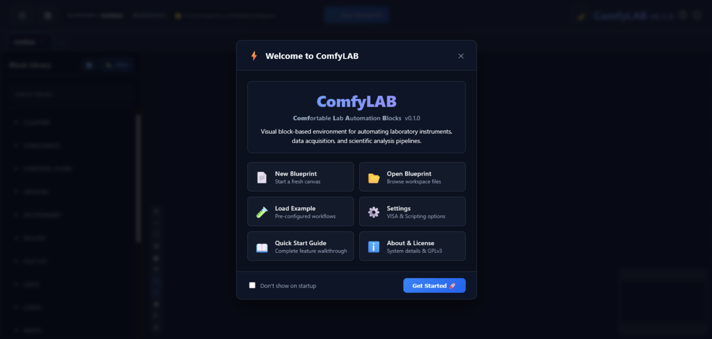
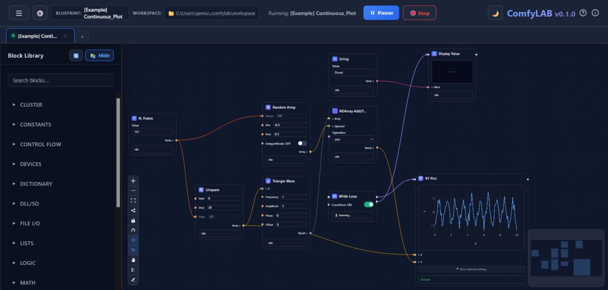
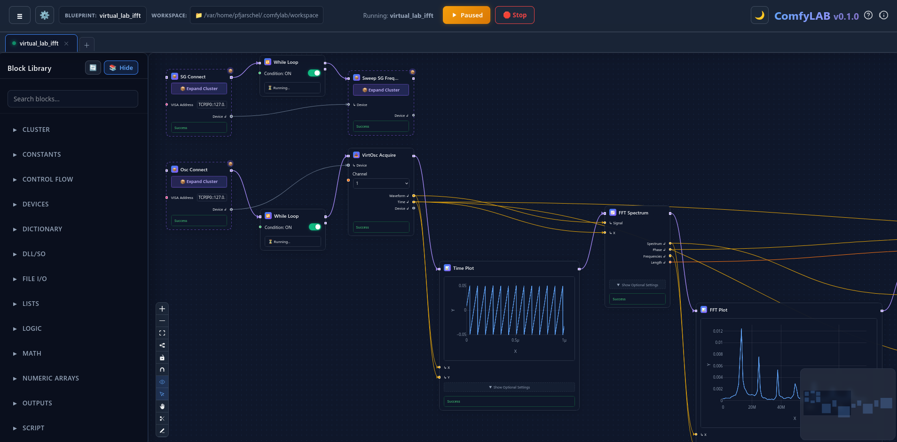

Connect physical laboratory instruments, orchestrate automated characterization loops, and stream live measurements with visual node dataflows. Zero recurring license fees, zero boilerplate code.

Informed by a comprehensive survey with over 190 experimental researchers and students across departments at UNICAMP, ComfyLAB was designed from the ground up to solve the most frequent operational hurdles of benchtop automation.
Researchers overwhelmingly expressed the need for a straightforward visual environment. Connect instruments, signal sweeps, and processors without having to debug line-by-line syntax.
Instead of spending days configuring and troubleshooting individual ad-hoc measurement scripts, standard routine flows can be assembled and verified in 15 minutes.
One of the greatest lab frustrations is inherited undocumented code. ComfyLAB blueprints are visual diagrams that any student or technician can understand instantly.
Proprietary seat licenses create bottlenecks and prevent deploying automation to every workstation. ComfyLAB is free software you can install on any number of PCs.
Everything you need to automate physical research benches, acquire sensor data, and run multi-instrument characterization loops.
Assemble complex acquisition loops by wiring functional blocks together. No obscure syntax, no missing semicolons, and no hidden state.
Direct hardware communication via PyVISA. Supports USB, GPIB, Ethernet, and RS-232 instruments from Keysight, Keithley, Rigol, Thorlabs, and more.
If an automation stops, crashes, or encounters an unexpected error, ComfyLAB immediately executes safety routines to shut down pump lasers, bias voltages, and high power supplies.
Execute in 13+ languages directly in-canvas or interface with vendor C/C++ DLLs, Linux shared objects (.so), and Windows ActiveX/COM objects seamlessly.
High-frequency canvas charting with persistent axis settings, live spectrum traces, multi-channel overlays, and instant CSV / HDF5 export.
Monitor multi-hour measurements remotely from your office or home. Protected by two-word zero-setup security tokens without compromising lab LAN safety.
From raw hardware to synchronized acquisition in minutes.
Plug your instrument into USB, GPIB, or Ethernet. ComfyLAB automatically lists VISA resources and ready-to-use device drivers.
Drag generator and reader blocks onto the canvas. Wire frequency sweeps, power increments, and analysis blocks with intuitive color-coded pins.
Hit Start. Watch real-time multi-trace plots update live. Data automatically logs to disk, while hardware safety guards monitor limits in the background.


ComfyLAB is not a closed black box. Inject scripts across 13+ languages, bridge native C/C++ DLLs and ActiveX/COM instruments, group sub-circuits into reusable clusters, or author native hardware drivers from scratch.
Embed code directly on the canvas without leaving ComfyLAB. Automatic input and output pins using intuitive decorators.
Directly call vendor-provided C/C++ compiled dynamic libraries (.dll on Windows, .so on Linux) with thread safety, or drive 32/64-bit Windows ActiveX & COM controllers.
Select a sub-network of connected blocks and collapse them into a single reusable Cluster with a single keypress. Expose only the pins you need.
Build first-class permanent blocks or drivers for custom rigs and sensors using Python's BaseBlock architecture and register into the palette.
Choose the installation method that fits your lab PC setup.
The quickest and cleanest way. Installs directly via official Python package repository.
For lab computers without Python or where user account restrictions prevent installing new software packages.
Clone the GitHub repository to write new instrument nodes, contribute features, or modify UI components.
Download the complete quickstart manual with step-by-step starter tutorials and interface diagrams.
English • Comprehensive Overview (PDF)
ComfyLAB is built by experimentalists for experimentalists. If your laboratory at UNICAMP or beyond has custom hardware or protocols you want integrated, let's collaborate!